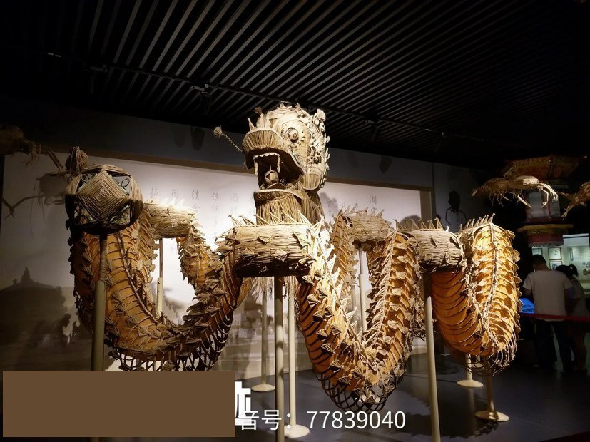

从河滩到展厅

一双在河滩上编龙的手，今天被放进了展柜。

馆藏 实拍 · 九江市博物馆藏品 九江市博物馆 · 草龙藏品 湖口 草龙序被看见
被看见，而且被留下来。
草龙被九江市博物馆收藏，也走进了这场会展。
河滩上那双编龙的手，今天立在展柜的灯光里 —— 手艺入了国家记录，龙也终于有了归处。
被记录1986 年，湖口草龙舞入选国家舞蹈集成
被珍藏九江市博物馆，正式收藏
被看见今日，走进这场会展
《草龙舞》全称收录于《中国民族民间舞蹈集成 · 江西卷》——湖口的草龙，早就在国家记录里。
壹五大展区
见草成龙点亮展贸归田
主入口→见草→成龙→点亮→展贸→归田→出口市集
「归田」展区置于出口前最后一站——
观众离场前看到的最后一件事，是这场展会结束后，物料去了哪里。
观众离场前看到的最后一件事，是这场展会结束后，物料去了哪里。
贰四天议程
壹
D1 · 专业日PROFESSIONAL DAY
开幕论坛「绿色非遗与展贸融合」· 采购商配对洽谈会（预约制）· 非遗数字化成果发布
贰
D2 – D4 · 公众日PUBLIC DAYS
匠人市集 · 草龙编制体验工坊（每日 4 场 · 限 30 人）· 非遗课堂
叁
D3 · 入夜NIGHT
夜间草龙巡游
肆
D4 · 闭幕CLOSING
送龙上天仪式
叁商贸配对
01提交需求专业观众提交采购需求→
02智能匹配按品类匹配展商→
03生成日程生成洽谈日程→
04现场洽谈预约洽谈室
目标采购商
重点品类
洽谈日程生成后 · 现场预约洽谈室
肆一本绿色账
我们承诺：展会结束，每一根秸秆，都有去处。
电子票
一票通全场一张电子票替代纸质门票、导览图与会刊。展期 4 天，主会场湖口县文化体育中心，分会场石钟山。
无纸化
门票 / 导览图 / 会刊 / 议程全部电子化。
按 4 天约 4 万人次、人均 120g 测算，减少用纸约 4.8 吨。
展具复用
模块化展具，目标复用率≥ 80%；草编与秸秆装饰撤展后统一回收。
撤展处置
「送龙上天」即本展会撤展物料处置方案——草编展品与秸秆装饰粉碎还田。
分时控流
预约入场用于控流与客流预测，降低峰值能耗。
以上为方案测算值，非实测数据；正式备案后按实际核算并公示。
〇被看见
壹展区
贰议程
叁配对
肆绿色
✕
正在放映
请稍候 · 光影将至
送龙上天 · 纪实影像
点击画面以外区域可关闭